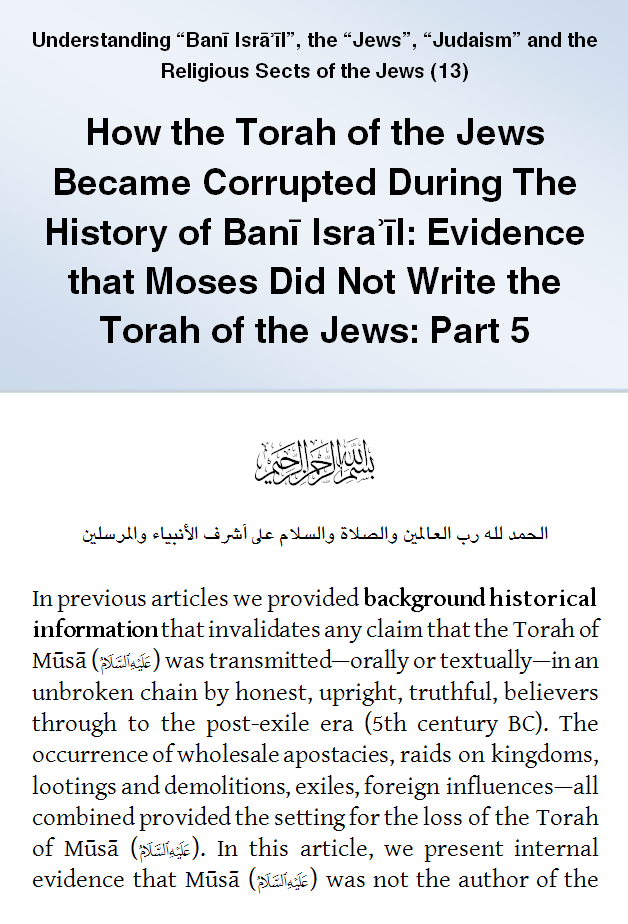
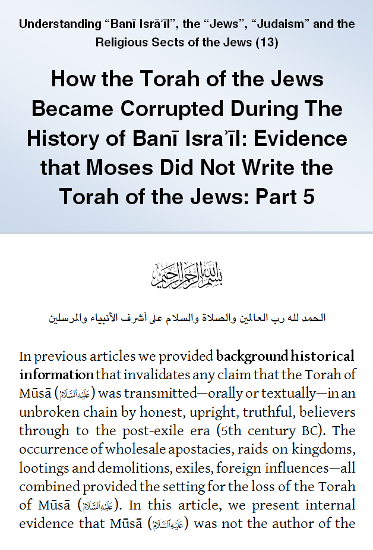

IslamMoses.Com
Posted by Abu Iyaad on Sunday, September, 30 2018 and filed under Torah
Key topics: Torah • Revelation • Ezra

|
IslamMoses.Com |
|
How the Torah of the Jews Became Corrupted: Part 5: Evidence That Moses Did Not Write the Torah of the Jews Posted by Abu Iyaad on Sunday, September, 30 2018 and filed under Torah Key topics: Torah • Revelation • Ezra 
|